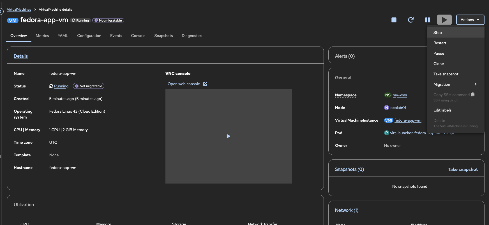
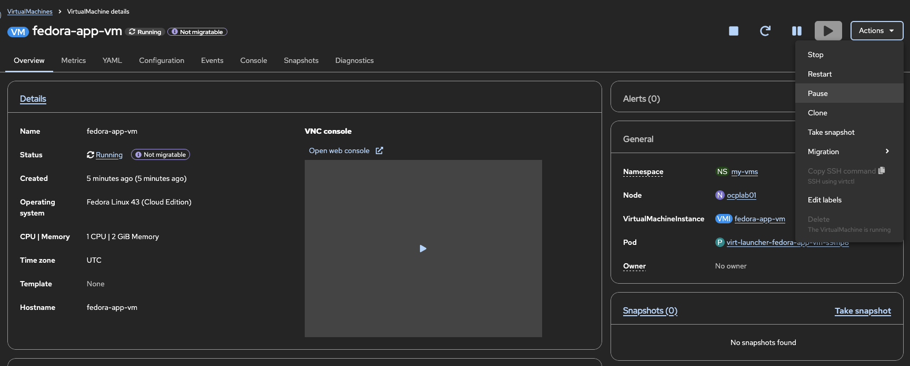
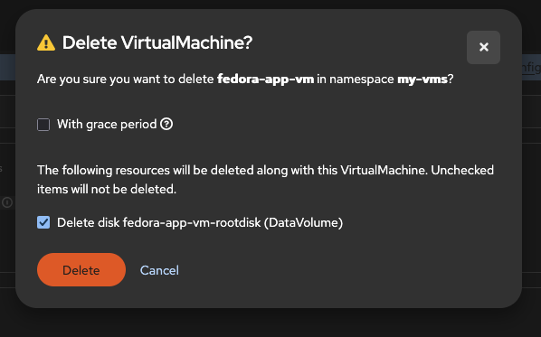

VMライフサイクル状態と基本操作の理解
概要
OpenShift Virtualizationにおける仮想マシンのライフサイクルを理解することは、効果的なVM管理、トラブルシューティング、および自動化に不可欠です。本ガイドでは、VirtualMachineリソースとVirtualMachineInstanceリソースの関係、VMが取り得るさまざまな状態、およびライフサイクル全体を通じてVMを管理する方法について説明します。
テスト済みバージョン:
OpenShift 4.20
前提条件
-
OpenShift VirtualizationがインストールされたOpenShift 4.18以上
-
OpenShift WebコンソールまたはCLIツール (
oc、virtctl) へのアクセス権 -
クラスター内で作成済みのVMが少なくとも1つ存在すること (Webコンソールを使用したテンプレートからのVM作成 を参照)
VirtualMachine と VirtualMachineInstance の違い
OpenShift Virtualizationでは、仮想マシンを管理するために主に2つのリソースを使用します。
VirtualMachine (VM)
VirtualMachine リソースは、VMの永続的な定義です。これは、以下を定義するテンプレートまたは仕様と考えてください。
-
VMの名前と名前空間
-
CPUとメモリの構成
-
ディスクとネットワークのアタッチメント
-
ブート順序とファームウェア設定
-
実行戦略 (VMの動作方法)
VirtualMachineリソースは、VMが実行中であるかどうかにかかわらず存在します。
# List VirtualMachine resources
oc get vm -n my-vms出力例:
NAME AGE STATUS READY
fedora-app-vm 14m Running TrueVirtualMachineInstance (VMI)
VirtualMachineInstance リソースは、実際に実行中のVMインスタンスを表します。これはVMが起動したときに作成され、VMが停止したときに削除されます。VMIには以下が含まれます。
-
ランタイム情報 (IPアドレス、ノード配置)
-
現在のフェーズ/状態
-
ゲストエージェント情報 (インストールされている場合)
# List VirtualMachineInstance resources
oc get vmi -n my-vms出力例:
NAME AGE PHASE IP NODENAME READY
fedora-app-vm 78s Running 10.128.0.184 ocplab01 True| 停止中のVMにはVirtualMachineリソースは存在しますが、VirtualMachineInstanceは存在しません。VMを起動するとVMIが作成されます。VMを停止するとVMIは削除されますが、VMリソースは残ります。 |
VMライフサイクル状態
VMは、そのライフサイクルを通じていくつかの状態に遷移します。これらの状態を理解することで、監視やトラブルシューティングが容易になります。
状態の説明
| 順序 | 状態 | 説明 | VMIの存在 |
|---|---|---|---|
1 |
Stopped (停止) |
VMは定義されていますが、実行されていません。計算リソースは消費されません。 |
いいえ |
2 |
Pending (保留中) |
VMIが作成され、前提条件 (ストレージ、ネットワーク) が整うのを待機しています。 |
はい |
3 |
Scheduling (スケジュール中) |
Kubernetesスケジューラーが適切なノードを探しています。 |
はい |
4 |
Starting (起動中) |
割り当てられたノード上でVMが起動しています。 |
はい |
5 |
Running (実行中) |
VMは完全に動作しており、接続を受け入れています。 |
はい |
6 |
Paused (一時停止) |
VMの実行がフリーズしています。状態はメモリ内に保持されます。 |
はい |
7 |
Stopping (停止中) |
正常終了の処理中です。 |
はい |
8 |
Terminating (終了中) |
VMIリソースの最終的なクリーンアップ中です。 |
はい (短時間) |
VMライフサイクルの管理
VMの起動
停止中のVMを起動するには：
Webコンソール:
-
Virtualization → VirtualMachines に移動します。
-
リストから対象のVMを見つけます。
-
VM名をクリックして詳細を開き、Actions → Start をクリックします。
-
または、ケバブメニュー (3つの点) をクリックして Start を選択します。

CLI:
virtctl start fedora-app-vm -n my-vmsVMが起動したことを確認:
# Check VM status
oc get vm fedora-app-vm -n my-vms
# Check VMI was created
oc get vmi fedora-app-vm -n my-vms出力例:
NAME AGE STATUS READY
fedora-app-vm 14m Running True
NAME AGE PHASE IP NODENAME READY
fedora-app-vm 78s Running 10.128.0.184 ocplab01 TrueVMの停止
VMを停止すると、正常終了の処理が行われ、VMIが削除されます。
Webコンソール:
-
VMの詳細ページに移動します。
-
Actions → Stop をクリックします。

CLI (正常停止):
virtctl stop fedora-app-vm -n my-vmsCLI (強制停止):
VMが応答しない場合は、強制停止を使用します。
virtctl stop fedora-app-vm -n my-vms --force| 強制停止は電源コードを抜くのと同じです。正常終了が失敗した場合のみ使用してください。 |
VMが停止したことを確認:
# VM should show Stopped status
oc get vm fedora-app-vm -n my-vms
# VMI should no longer exist
oc get vmi fedora-app-vm -n my-vms出力例:
NAME AGE STATUS READY
fedora-app-vm 14m Stopped False
Error from server (NotFound): virtualmachineinstances.kubevirt.io "fedora-app-vm" not foundVMの一時停止と再開
一時停止 (Pause) は、VMの状態をメモリ内に保持したまま実行を凍結します。これは以下の場合に役立ちます。
-
CPUリソースを一時的に解放する
-
一貫性のあるスナップショットを取得する
-
デバッグや調査を行う
| 一時停止中のVMもノード上のメモリを消費します。CPU実行のみが中断されます。 |
Webコンソール:
-
VMの詳細ページに移動します。
-
Actions → Pause をクリックします。
-
再開するには: Actions → Unpause をクリックします。


CLI:
# Pause a VM
virtctl pause vm fedora-app-vm -n my-vms
# Unpause a VM
virtctl unpause vm fedora-app-vm -n my-vms一時停止状態を確認:
oc get vm fedora-app-vm -n my-vms出力例:
NAME AGE STATUS READY
fedora-app-vm 14m Paused FalseVMの再起動
再起動 (Restart) は、停止と起動を順番に実行します。以下の場合に使用します。
-
再起動が必要な設定変更を適用する場合
-
ゲストOSの問題から復旧する場合
-
VMの状態をリフレッシュする場合
Webコンソール:
-
VMの詳細ページに移動します。
-
Actions → Restart をクリックします。

CLI:
virtctl restart fedora-app-vm -n my-vms| 再起動は正常終了が完了するまで待機してから起動します。ゲストOSが応答しない場合、再起動に時間がかかるか、最初に強制停止が必要になることがあります。 |
VMの削除
VMを削除する際、関連するストレージ (PVC/DataVolume) も削除するかどうかを選択できます。
Webコンソール:
-
VMの詳細ページに移動します。
-
Actions → Delete をクリックします。
-
確認ダイアログで、ディスクを削除するかどうかを選択します。
-
Delete をクリックします。


CLI (VMを削除、ディスクを保持):
oc delete vm fedora-app-vm -n my-vmsデフォルトでは、VMが所有するDataVolumeは削除されます。これらを保持するには、最初にオーナー参照を削除するか、Webコンソールのオプションを使用してください。
削除の確認:
# VM should not exist
oc get vm fedora-app-vm -n my-vms
# Check if PVCs were preserved (if desired)
oc get pvc -n my-vms出力例:
Error from server (NotFound): virtualmachines.kubevirt.io "fedora-app-vm" not found
No resources found in my-vms namespace.| VMの削除は永続的な操作です。削除する前に、重要なデータのバックアップがあることを確認してください。 |
VMの状態監視
VMおよびVMIの状態確認
詳細なVM情報:
oc describe vm fedora-app-vm -n my-vms出力例 (関連セクション):
Name: fedora-app-vm
Namespace: my-vms
Labels: app=fedora-app-vm
...
Status:
Conditions:
Last Transition Time: 2026-03-05T17:10:11Z
Status: True
Type: Ready
Message: All of the VMI's DVs are bound and ready
Reason: AllDVsReady
Status: True
Type: DataVolumesReady
Status: True
Type: AgentConnected
Printable Status: Running
Ready: true
Run Strategy: Manual確認すべき主要セクション:
-
Status.Conditions - 現在の状態と問題があれば表示されます
-
Status.PrintableStatus - 人間が読みやすい形式のステータス
-
Status.Ready - VMが使用可能な状態かどうか
詳細なVMI情報:
oc describe vmi fedora-app-vm -n my-vms出力例 (関連セクション):
Name: fedora-app-vm
Namespace: my-vms
...
Status:
Guest OS Info:
Id: fedora
Kernel Release: 6.17.1-300.fc43.x86_64
Name: Fedora Linux
Pretty Name: Fedora Linux 43 (Cloud Edition)
Version Id: 43
Interfaces:
Interface Name: enp1s0
Ip Address: 10.128.0.184
Mac: 02:7e:e2:0a:7c:df
Name: default
Node Name: ocplab01
Phase: Running
Phase Transition Timestamps:
Phase: Pending
Phase: Scheduling
Phase: Scheduled
Phase: Running主要セクション:
-
Status.Phase - 現在のライフサイクルフェーズ
-
Status.Interfaces - IPアドレスを含むネットワーク情報
-
Status.NodeName - VMが実行されているノード
-
Status.GuestOSInfo - ゲストOSの詳細 (ゲストエージェントが必要)
条件 (Conditions) の理解
VMは、その状態を示す条件 (Conditions) をレポートします。これは以下で確認できます。
oc get vm fedora-app-vm -n my-vms -o jsonpath='{.status.conditions}' | jq出力例:
[
{
"lastTransitionTime": "2026-03-05T17:10:11Z",
"status": "True",
"type": "Ready"
},
{
"message": "All of the VMI's DVs are bound and ready",
"reason": "AllDVsReady",
"status": "True",
"type": "DataVolumesReady"
},
{
"message": "cannot migrate VMI: PVC fedora-app-vm-rootdisk is not shared...",
"reason": "DisksNotLiveMigratable",
"status": "False",
"type": "LiveMigratable"
},
{
"status": "True",
"type": "AgentConnected"
}
]一般的な条件:
| 条件 | 意味 |
|---|---|
Ready |
VMが実行中であり、アクセス可能 |
Paused |
VMの実行が一時停止中 |
AgentConnected |
QEMUゲストエージェントが通信中 |
Synchronized |
VMの仕様がVMIと同期済み |
VMイベント
イベントは、VMで何が起きているかについての詳細情報を提供します。
# Get events for a specific VM
oc get events -n my-vms --field-selector involvedObject.name=fedora-app-vm出力例:
LAST SEEN TYPE REASON OBJECT MESSAGE
14m Normal SuccessfulDataVolumeCreate virtualmachine/fedora-app-vm Created DataVolume fedora-app-vm-rootdisk
90s Normal SuccessfulCreate virtualmachine/fedora-app-vm Started the virtual machine by creating the new virtual machine instance fedora-app-vm
90s Normal SuccessfulCreate virtualmachineinstance/fedora-app-vm Created virtual machine pod virt-launcher-fedora-app-vm-fktmb
84s Normal Created virtualmachineinstance/fedora-app-vm VirtualMachineInstance defined.
84s Normal Started virtualmachineinstance/fedora-app-vm VirtualMachineInstance started.イベントをリアルタイムで監視:
oc get events -n my-vms -w一般的なイベントとその意味:
| イベント | 説明 |
|---|---|
SuccessfulCreate |
VMIの作成に成功 |
Started |
VMの起動に成功 |
Stopped |
VMの停止 (正常終了) |
Killing |
強制停止を開始 |
FailedScheduling |
適切なノードが見つかりませんでした |
FailedCreate |
VMIの作成に失敗 (詳細を確認) |
実行戦略 (Run Strategies)
実行戦略は、ライフサイクル全体を通じてVMが自動的にどのように動作するかを定義します。戦略はVM仕様内で設定され、VMが自動的に起動するか、停止後に再起動するか、または停止状態を維持するかを決定します。
利用可能な実行戦略
| 戦略 | 動作 | ユースケース |
|---|---|---|
|
VMは自動的に起動し、何らかの理由 (ゲストによって開始されたシャットダウンを含む) で停止した場合は再起動します。 |
常に稼働している必要がある本番ワークロード。 |
|
VMは自動的に起動し、障害時のみ再起動します。ゲストによるシャットダウンの場合はVMは停止状態を維持します。 |
クラッシュからは復旧しつつ、意図的なシャットダウンは尊重すべきサービス。 |
|
|
開発/テスト用VM、または特定のスケジュールが必要なワークロード。 |
|
VMは停止状態を維持します。起動コマンドは無視されます。 |
一時的に廃止されたVM、またはメンテナンスモード。 |
実行戦略の設定
VMのYAML:
apiVersion: kubevirt.io/v1
kind: VirtualMachine
metadata:
name: my-vm
spec:
runStrategy: Always # or RerunOnFailure, Manual, Halted
template:
# ... VM template specWebコンソール経由:
-
VMの詳細ページに移動します。
-
YAML タブをクリックします。
-
spec.runStrategyフィールドを修正します。 -
Save をクリックします。

runStrategy と非推奨の running フィールドを同時に使用することはできません。新規VMには runStrategy を使用してください。
|